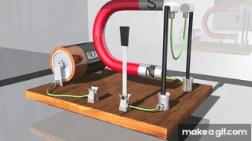

Problem 1
Simulating the Effects of the Lorentz Force
Introduction
The Lorentz force governs the motion of a charged particle in electromagnetic fields and is given by
This force underlies the operation of cyclotrons, mass spectrometers, plasma confinement devices, and many astrophysical processes.
Theory
- Uniform Magnetic Field
When \(\mathbf{E} = \mathbf{0}\) and \(\mathbf{B} = B\,\hat{\mathbf{z}}\), a particle of charge \(q\) and mass \(m\) undergoes circular motion in the plane perpendicular to \(\mathbf{B}\), with Larmor radius
$$ r_L = \frac{m\,v_\perp}{|q|\,B}, $$
and angular frequency (cyclotron frequency)
$$ \omega_c = \frac{|q|\,B}{m}. $$
-
Parallel Electric and Magnetic Fields
If both \(\mathbf{E}\) and \(\mathbf{B}\) point along \(\hat{\mathbf{z}}\), the particle experiences circular motion plus uniform acceleration along the field, resulting in a helical trajectory. -
Crossed Electric and Magnetic Fields
For \(\mathbf{E} \perp \mathbf{B}\), in addition to gyration, the particle drifts with velocity
$$ \mathbf{v}_d = \frac{\mathbf{E} \times \mathbf{B}}{B^2}. $$
Numerical Method
We employ a simple Euler integrator with time step \(\Delta t\):
Parameters:
- Charge: \(q = 1.0\ \mathrm{C}\)
- Mass: \(m = 1.0\ \mathrm{kg}\)
- Time step: \(\Delta t = 0.01\ \mathrm{s}\)
- Number of steps: \(1000\)
Results
-
Uniform Magnetic Field
The particle executes uniform circular motion in the \(xy\)-plane with radius
$$ r_L = \frac{m\,v_0}{q\,B}. $$ -
Parallel Electric & Magnetic Fields
A helical trajectory appears: circular gyration in the \(xy\)-plane plus linear acceleration along \(\hat{\mathbf{z}}\). -
Crossed Electric & Magnetic Fields
Besides gyration, a steady drift occurs perpendicular to both \(\mathbf{E}\) and \(\mathbf{B}\), with
$$ \mathbf{v}_d = \frac{\mathbf{E}\times\mathbf{B}}{B^2}. $$
Discussion
- Cyclotrons: Utilize a uniform magnetic field to bend charged particles into circular orbits; a perpendicular electric field accelerates them across gaps.
- Magnetic Traps (Penning/Mirrors): Combine static \(\mathbf{E}\) and \(\mathbf{B}\) to confine plasmas; drift motions play critical roles in confinement stability.
- Mass Spectrometers: Exploit the dependence of \(r_L\) on \(m/q\) to separate ion species by their curvature in a known \(\mathbf{B}\).
Extensions
- Non-uniform Fields: Introduce gradients in \(\mathbf{B}(r)\) to observe magnetic mirror effects.
- Relativistic Dynamics: Modify equations to include Lorentz factor \(\gamma = (1 - v^2/c^2)^{-1/2}\).
- Monte Carlo Ensemble: Simulate many particles with randomized initial velocities to study beam dynamics or thermal plasmas.
- Numerical Methods Comparison: Compare Euler, Runge–Kutta 4, and symplectic integrators for energy conservation.
Python Implementation
import numpy as np
import matplotlib.pyplot as plt
from matplotlib.animation import FuncAnimation, PillowWriter
def lorentz_acceleration(v, q, m, E, B):
return (q/m) * (E + np.cross(v, B))
def simulate_rk4(q, m, E, B, v0, dt, steps):
r = np.zeros((steps, 3))
v = np.zeros((steps, 3))
r[0] = np.zeros(3)
v[0] = np.array(v0, float)
for i in range(steps-1):
k1_v = lorentz_acceleration(v[i], q, m, E, B)
k1_r = v[i]
k2_v = lorentz_acceleration(v[i] + 0.5*dt*k1_v, q, m, E, B)
k2_r = v[i] + 0.5*dt*k1_v
k3_v = lorentz_acceleration(v[i] + 0.5*dt*k2_v, q, m, E, B)
k3_r = v[i] + 0.5*dt*k2_v
k4_v = lorentz_acceleration(v[i] + dt*k3_v, q, m, E, B)
k4_r = v[i] + dt*k3_v
v[i+1] = v[i] + (dt/6)*(k1_v + 2*k2_v + 2*k3_v + k4_v)
r[i+1] = r[i] + (dt/6)*(k1_r + 2*k2_r + 2*k3_r + k4_r)
return r, v
def animate_trajectory(r, title_top, title_bottom, filename, xlim, ylim, zlim):
fig = plt.figure(figsize=(6,6))
ax = fig.add_subplot(projection='3d')
# Two-line centered title
ax.set_title(f"{title_top}\n{title_bottom}", pad=20)
ax.set_xlabel('x (m)'); ax.set_ylabel('y (m)'); ax.set_zlabel('z (m)')
ax.set_xlim(*xlim); ax.set_ylim(*ylim); ax.set_zlim(*zlim)
line, = ax.plot([], [], [], lw=2)
def update(frame):
line.set_data(r[:frame,0], r[:frame,1])
line.set_3d_properties(r[:frame,2])
return line,
ani = FuncAnimation(fig, update, frames=len(r), interval=20, blit=True)
ani.save(filename, writer=PillowWriter(fps=30))
plt.close(fig)
if __name__ == '__main__':
dt = 0.01 # time step [s]
steps = 1000
# Scenarios with separated title lines
scenarios = [
{
'title_top': 'Uniform Magnetic Field',
'title_bottom': '(B=1.0 T): Circular Motion',
'E': np.zeros(3), 'B': np.array([0,0,1.0]),
'v0': [1.0,0,0], 'q':1.0, 'm':1.0,
'xlim':(-1.2,1.2), 'ylim':(-1.2,1.2), 'zlim':(-0.2,0.2),
'filename':'uniform_magnetic.gif'
},
{
'title_top': 'Parallel Electric & Magnetic Fields',
'title_bottom': '(E=0.5 V/m, B=1.0 T): Helical Motion',
'E': np.array([0,0,0.5]), 'B': np.array([0,0,1.0]),
'v0': [1.0,0,0], 'q':1.0, 'm':1.0,
'xlim':(-1.2,1.2), 'ylim':(-1.2,1.2), 'zlim':(0,10),
'filename':'parallel_fields.gif'
},
{
'title_top': 'Crossed Electric & Magnetic Fields',
'title_bottom': '(E⊥B, E=0.5 V/m, B=1.0 T): Drift Motion',
'E': np.array([0.5,0,0]), 'B': np.array([0,0,1.0]),
'v0': [1.0,0,0], 'q':1.0, 'm':1.0,
'xlim':(-5,5), 'ylim':(-5,5), 'zlim':(-0.2,0.2),
'filename':'crossed_fields.gif'
}
]
for sc in scenarios:
r, v = simulate_rk4(sc['q'], sc['m'], sc['E'], sc['B'], sc['v0'], dt, steps)
animate_trajectory(
r,
title_top=sc['title_top'],
title_bottom=sc['title_bottom'],
filename=sc['filename'],
xlim=sc['xlim'],
ylim=sc['ylim'],
zlim=sc['zlim']
)
print(f"Saved animation: {sc['filename']} with titles '{sc['title_top']}' and '{sc['title_bottom']}'")


